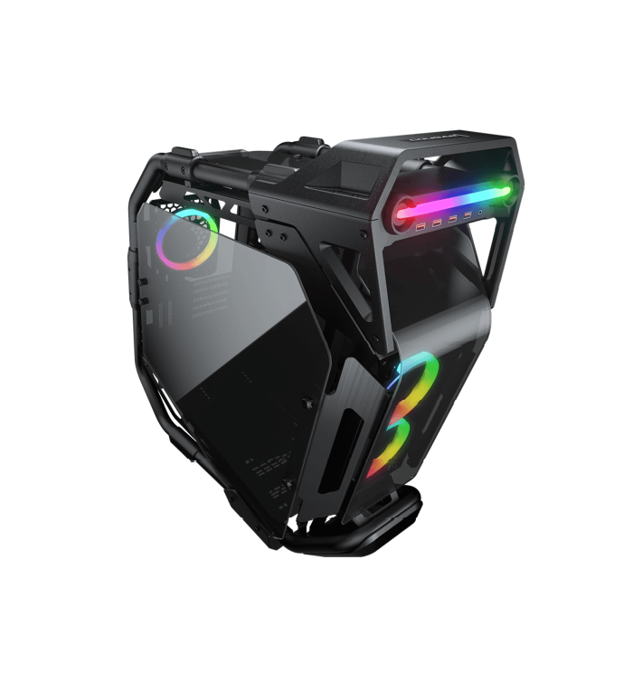

В данной статье вы сможете подобрать себе сборку для работы в программах связанных с монтажём видео и работой с графикой и 3D-моделями.
Данная сборка отлично подойдёт тем, кому необходим компьютер работы с графикой. С его помощью вы можете создавать огромные проекты без лагов.
Данная сборка отлично подойдёт тем, кому необходим компьютер работы с: монтажём видеороликов, 3D-моделированием, графикой. Также на этой сборке любая игра будет "летать" в 4К разрешени.